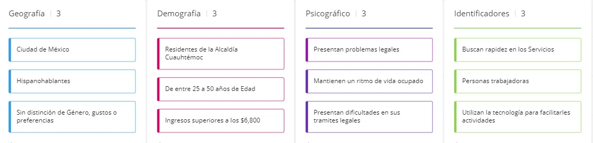
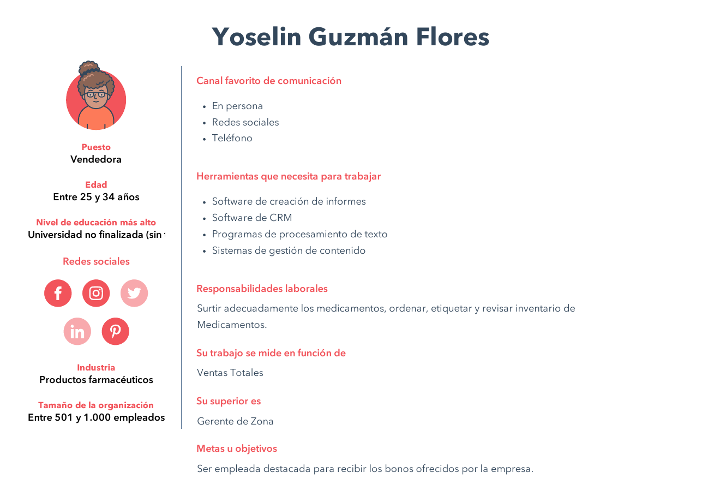
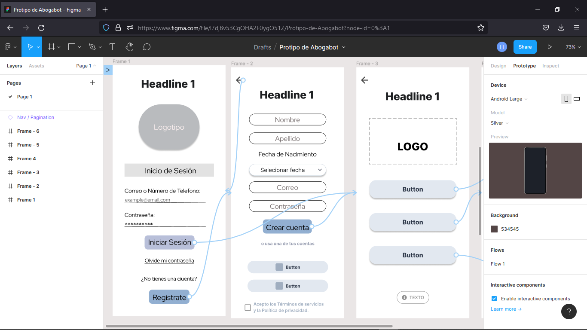
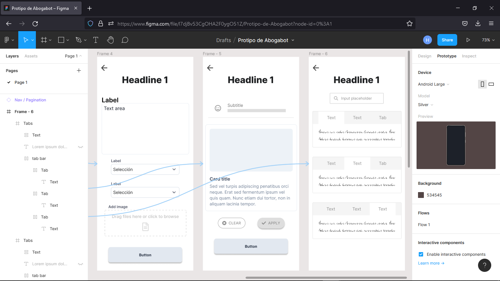
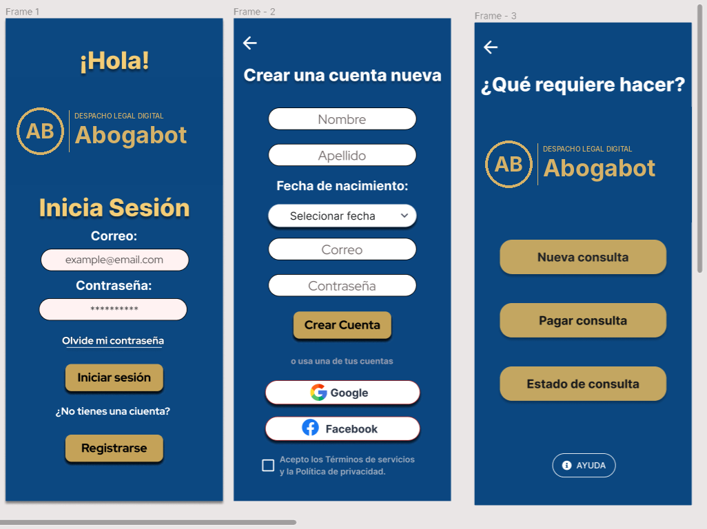
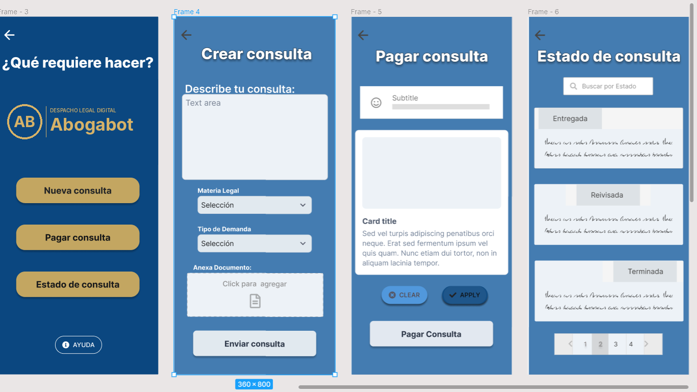

01 · Reto
Un despacho que atiende todo por teléfono y en persona
El despacho quería que sus clientes iniciaran una demanda llenando un formulario web, pagaran en línea y consultaran el avance sin depender de llamadas. Del lado interno, el administrador necesitaba recibir la solicitud, generar el documento legal en Word con los datos capturados y ver los ingresos en un tablero.
Cliente
Crea su cuenta, describe su caso, adjunta documentos, paga y recibe avisos por correo en cada etapa.
Administrador
Recibe la notificación, genera el documento automáticamente, actualiza el estado y deja comentarios por etapa.
Restricciones
Sitio responsive con prioridad móvil. Paleta solicitada: azul marino y blanco, abierta a propuestas.
02 · Requerimientos
Especificación antes de dibujar pantallas
Documenté la solicitud con un formato de especificación de requerimientos de software: descripción, alcance, interesados, requisitos técnicos y un plan de tres fases (boceto UI/UX, desarrollo y pruebas de calidad).
Requisitos funcionales clave
- Registro e inicio de sesión (correo, Google o Facebook).
- Formulario de consulta con materia legal, tipo de demanda y adjuntos.
- Pago en línea antes de iniciar el proceso.
- Seguimiento por estados: entregada, revisada, terminada.
- Notificaciones por correo y tablero de ingresos para el administrador.
Requisitos técnicos marcados
- Tipo de desarrollo: web responsive.
- Base de datos: SQL Server.
- Lenguaje: JavaScript.
- Componente conversacional propuesto con Dialogflow para atender solicitudes de servicio.
03 · Usuario
Público objetivo
Residentes de la alcaldía Cuauhtémoc (CDMX), de 25 a 50 años, con ritmo de vida ocupado, trámites legales pendientes y hábito de usar la tecnología para resolver tareas. Buscan rapidez por encima de todo.


04 · Wireframes
Arquitectura del flujo en baja fidelidad
Seis pantallas conectadas como prototipo interactivo en Figma. El objetivo fue validar el recorrido completo antes de invertir tiempo en lo visual.
- Inicio de sesión
- Registro
- Menú de acciones
- Crear consulta
- Pagar
- Estado de consulta


05 · Diseño UI
Alta fidelidad para Android
Respeté la preferencia del cliente (azul marino) y añadí dorado como color de acción para dar contraste y transmitir formalidad. Los botones principales concentran las tres tareas que el usuario viene a resolver: nueva consulta, pagar y revisar estado.


06 · Aprendizajes
Qué haría distinto hoy
Persona alineada al segmento
El buyer persona de la práctica (vendedora del sector farmacéutico) no refleja al cliente del despacho. Hoy construiría la persona a partir del segmento definido: profesionista de la Cuauhtémoc con un trámite legal urgente y poco tiempo.
Completar pago y estado
Las pantallas 5 y 6 aún muestran textos de relleno. El siguiente paso es definir el resumen de cobro, los métodos de pago y una línea de tiempo con fecha y comentario por etapa.
Diseñar el lado del administrador
El requerimiento incluye tablero de ingresos y actualización de estados, que no llegaron a prototipo. Es donde está el mayor ahorro operativo para el despacho.
Medir con usuarios reales
Probar el flujo con 5 personas del segmento y medir tiempo para crear una consulta y tasa de abandono en el pago, antes de pasar a desarrollo.
Relación con mi trabajo actual: el mismo principio de este caso, reducir llamadas dando al usuario visibilidad del estado de su solicitud, es el que aplico en soporte técnico N1 y en la digitalización de pequeños negocios.